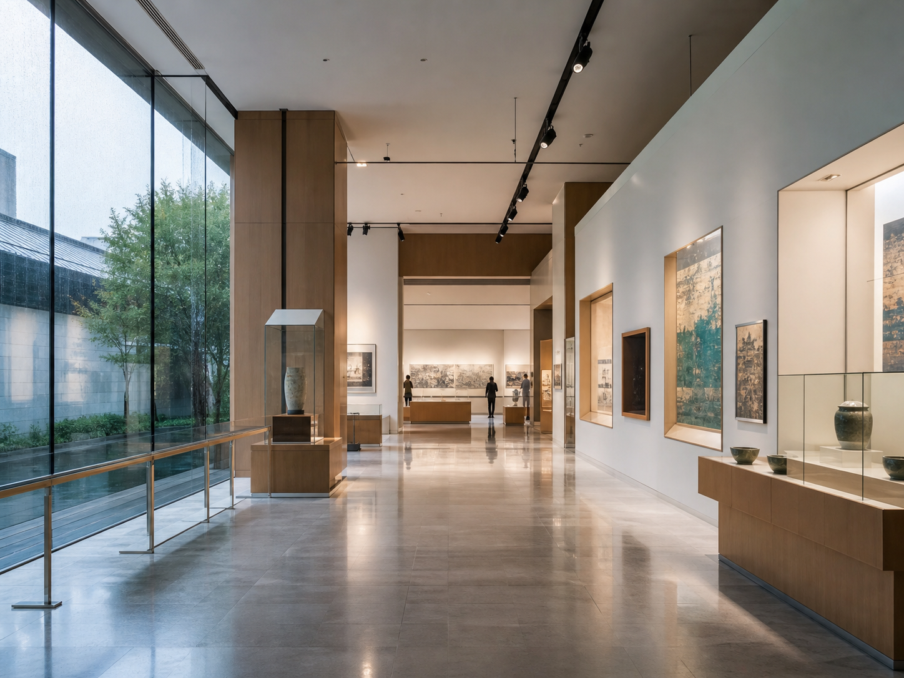

Day 1 夜游
杭州自驾到无锡，入住后逛南长街
下午开车到太湖新城洲际，先办理入住和停车；晚饭去清名桥、南长街，若周边车位紧张，改停南禅寺或阳春巷周边。
主线是“自驾泊太湖，最后一日经丹阳返杭”。住在无锡太湖新城洲际，两晚都回酒店休息，退房后去丹阳配镜，再从丹阳直接回杭州。
把丹阳放到最后一天，退房后顺路去配镜再返杭；无锡两天只围绕酒店、太湖和老城展开，减少折返。
下午开车到太湖新城洲际，先办理入住和停车；晚饭去清名桥、南长街，若周边车位紧张，改停南禅寺或阳春巷周边。
从酒店开车去鼋头渚，优先导航充山大门停车场；下午按体力选择蠡湖、惠山古镇/寄畅园或回酒店休整。
酒店退房后装好行李，开车去丹阳眼镜城周边；配镜结束从丹阳直接返杭，不再折回无锡。
时间按端午自驾客流留了缓冲；景区停车、演出和配镜取片时间请出发前一天再确认，并以地图实时路况为准。
下午出城容易遇到端午车流，建议提前加油、备水，导航直接设为无锡太湖新城洲际。不要把晚饭订得太紧，给高速和入城路段留缓冲。
先把车停进酒店，确认第二天是否需要挪车和停车收费规则；把第三天丹阳配镜需要的旧眼镜、处方、隐形眼镜盒、身份证件放进随身包。
可自驾去清名桥/南长街周边停车场，若车位紧张就停南禅寺或阳春巷周边后步行。晚饭可选酱排骨、银丝面、三鲜馄饨、玉兰饼。
自驾优先导航“鼋头渚充山大门停车场”。端午上午车位紧张，建议早到；若停车排队明显，减少园内支线，把湖边主线走舒服。
建议走充山大门、太湖佳绝处、鼋渚春涛、游船到太湖仙岛一线，按体力增减。午饭可在景区简单解决，或回蠡湖/市区再吃。
想继续看湖就去蠡湖沿线，想省体力就回太湖新城休息。自驾不要把下午塞满，端午景区出口和停车场都可能慢。
如果体力还好，开车去惠山古镇周边停车场，慢逛祠堂群、泥人、茶点和寄畅园。停车满位时就把它换成酒店附近轻松晚餐。
第一晚没坐游船的话，这晚可补古运河夜游；如果累了，酒店附近吃饭后早点休息，给第三天丹阳配镜留精神。
早餐后退房，把行李和旧眼镜资料放好，导航丹阳眼镜城周边停车场。这条线不比无锡直返更短，但能完成丹阳后置、不折返无锡的目标。
先验光再挑镜框，镜片品牌、折射率、膜层、防蓝光、散光轴位逐项写清。复杂镜片可能不能当天取，提前问清快递或补寄。
普通单光片通常有机会当天取。取镜时试戴10分钟，确认瞳距、镜腿松紧和地面变形感；等片时间过长就改快递。
从丹阳直接返杭，尽量别拖到太晚再上高速。若当天取镜超时，优先保留安全返程时间，让店家快递新镜。
这趟的关键不是景点多，而是把车停顺、把返程留稳。全程用地图实时路况校准，不写死精确车程。
第一天下午出城预留拥堵，导航直接设为无锡太湖新城洲际。到酒店先停车入住，再决定晚间是否开车进老城。
太湖新城到鼋头渚适合自驾；南长街、惠山古镇停车压力更大，晚高峰可短途叫车或把车停在外围后步行。
第三天退房后去丹阳眼镜城周边，再从丹阳直接返杭。它不是最短返杭线，但避免丹阳和无锡之间来回折返。
入住时确认停车入口、是否免费、是否需要报车牌。第二天若不挪车，提前确认酒店是否允许连续停放。
鼋头渚优先导航充山大门停车场；惠山古镇和南长街优先找周边正规停车场，满位就停外围后步行。
丹阳配镜尽量上午到，下午尽早处理取镜或快递。返杭不要拖到深夜，端午最后一天把安全驾驶放第一位。
配镜这件事最容易被“价格很香”带跑，建议按清单谈，别只问总价。
三天不用追太多网红店，围绕景点就近吃，保留更多游玩体力。
如果天气、停车或体力变化，可以按下面方式替换，不影响两晚住太湖新城、最后一天经丹阳返杭的主线。
第二天下午不逛惠山，直接自驾去灵山胜境。但马山方向更远，适合不怕晚归、体力充足且愿意处理景区停车的人。

遇到大雨，第二天把鼋头渚换成无锡博物院、海岸城/万象城，停车和吃饭都更稳，第三天照常去丹阳返杭。
如果镜片加工拖到下午很晚，别硬等到疲劳驾驶。确认参数和售后后改快递，把返杭时间留出来。
用于核对景点定位、开放型街区、丹阳眼镜产业背景与图片素材。正式出发前请再查当天票务、停车和营业状态。